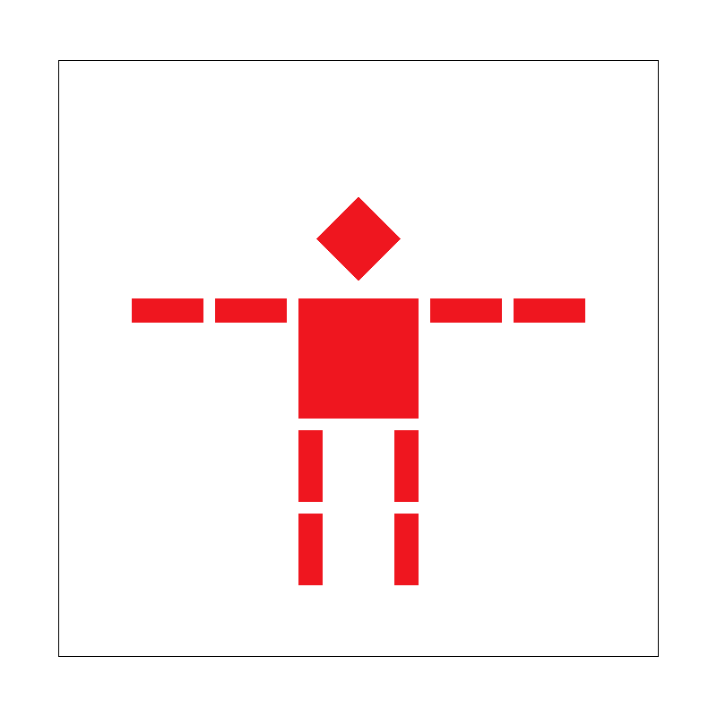

Overview
In this project, I implemented a comprehensive rasterizer that can render SVG files with various advanced features. The rasterizer includes triangle rasterization with supersampling for antialiasing, hierarchical transformations, barycentric coordinate interpolation for color gradients, and sophisticated texture mapping with both pixel-level and mipmap-level sampling techniques. This project demonstrates the fundamental concepts of computer graphics rasterization pipeline, from basic triangle drawing to advanced antialiasing and texture filtering methods.
Section I: Rasterization
Part 1: Rasterizing single-color triangles
My triangle rasterization algorithm uses the three-line test method discussed in class. For each pixel in the triangle's bounding box, I calculate whether the sample point (at pixel center + 0.5, 0.5) lies inside the triangle by evaluating the line equations for all three edges.
The algorithm works by:
- Computing the bounding box of the triangle to limit the search space
- For each pixel center in the bounding box, testing if it's inside the triangle using the three-line test
- Handling edge cases to ensure consistent behavior regardless of triangle winding order
- Filling pixels that pass the inside test with the specified color
 basic/test4.svg rendered with default parameters
basic/test4.svg rendered with default parameters
|
Part 2: Antialiasing triangles
Supersampling is a technique to reduce aliasing artifacts (jaggies) in rendered images by sampling multiple points per pixel and averaging the results. This creates smoother edges and better visual quality.
|
Sample rate 1 (no supersampling)
|
Sample rate 4
|
Sample rate 16
|
Part 3: Transforms
|

Modified robot with waving gesture
|
Section II: Sampling
Part 4: Barycentric coordinates
|
Color gradient using barycentric interpolation
|
Part 5: "Pixel sampling" for texture mapping
|
Nearest sampling at 1 sample per pixel
|
Bilinear sampling at 1 sample per pixel
|
|
Nearest sampling at 16 samples per pixel
|
Bilinear sampling at 16 samples per pixel
|
Part 6: "Level sampling" with mipmaps for texture mapping
|
L_ZERO with P_NEAREST
|
L_NEAREST with P_NEAREST
|
|
L_LINEAR with P_LINEAR (trilinear)
|
L_NEAREST with P_LINEAR
|